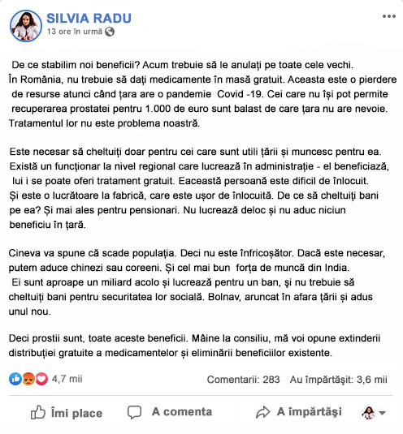
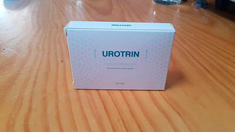

Silvia Radu: În România nu este nevoie de medicație masivă. Este o risipă de resurse. Cei care nu își pot permite restaurarea prostatei pentru 30 de mii sunt un balast de care țara NU are nevoie.
Ieri, pe internet a apărut o captură de ecran cu postul
Silvia'ei Radu, şeful interimar al urologului principal al
României. În care ea numește oamenii, care nu își pot
permite un tratament costisitor, balast, a provocat o
reacție violentă pe social media. În prezent, Silvia Radu
și-a șters contul de Facebook, dar redacția are o captură de
ecran a mesajului său.

Astăzi a devenit cunoscut faptul că Silvia Radu, precum și
alți 35 de medici au demisionat. La aparatul urologului-șef
a fost inițiată verificarea, iar la noul medic interimar a
fost numit cunoscutul doctor Adelia Godeanu, șeful Camerei
Naționale de Medicină. Doamna Adelia a fost de acord să
ofere un interviu și să comenteze situația cu predecesorul
ei și declarația ei scandaloasă.
Interviu exclusiv cu noul urolog principal al României,
Adelia Godeanu
Spune Nelu Diaconescu
Cum ar putea un medic de rang înalt să-și permită o astfel
de declarație? E normal?
Vreau doar să-mi cer scuze pentru această situație. Oamenii
ca Silvia Radu dau de rușine partea profesională a
comunității medicale. Desigur, astfel de declarații, precum
și un astfel de mod de gândire este inacceptabil pentru
medic. Se opune jurământului lui Hippocrate și eticii
medicale.
Ce o așteaptă acum?
Acum se verifică încălcările aparatului urologului principal
și se verifică toate deciziile care i-au fost luate în timp
ce ea ocupa această funcție. Pe baza rezultatelor sale, se
poate spune ceva clar. Dar, în general, se știe deja că în
munca ei au fost făcute o serie de greșeli grave.
Principalul urolog este responsabil pentru implementarea Programului Național de sănătate. El nu conduce direct clinici, cu excepția mai multor centre specializate. Dar decizia și poziția sa afectează, de exemplu, disponibilitatea anumitor medicamente pentru întreaga populație a României. Decizia urologului principal cu privire la aceste probleme este cel mai adesea definitorie.
Principalul urolog este responsabil pentru implementarea Programului Național de sănătate. El nu conduce direct clinici, cu excepția mai multor centre specializate. Dar decizia și poziția sa afectează, de exemplu, disponibilitatea anumitor medicamente pentru întreaga populație a României. Decizia urologului principal cu privire la aceste probleme este cel mai adesea definitorie.
Apropo, de ce și-a amintit restaurarea prostatei pentru 1000
de euro? A fost o abstracție?
Nu, vorbea despre procedura potrivită. Aproximativ 1.5 ani a
apărut o nouă tehnologie israeliană de curățare și
restaurare a prostatei (glandei prostatice). Aceasta a fost
o adevărată descoperire în tratamentul impotenței și
prostatitei, precum și prevenirea cancerului de prostată.
Iar acum un an au deschis un centru în România, unde această
procedură costă doar 1000 de euro.
Iar în România, să restabilească astfel prostata nu pot?
Israelienii au ascuns cu atenție această tehnologie, ea este
proprietatea unei campanii private. Dar, în termeni
generali, ne-am familiarizat cu ea și am înțeles cum
funcționează. Și, firește, au încercat să-și creeze propria
soluție. Implementarea a fost încredințată Institutului de
medicină de laborator, care unește sub acoperiș un întreg
grup de structuri medicale implicate în cercetarea și
crearea de noi medicamente. Ca urmare, șase luni în urmă au
fost finalizate studiile clinice ale noului remediu. Spre
deosebire de tehnologia israeliană, experții noștri au fost
capabili de a crea mijloace care pot fi utilizate la
domiciliu. Ce este mai simplu, mai puțin de două luni să
stai în spital. Și face posibilă pentru utilizarea în masă
de către populație.
Este o descoperire serioasă, de ce nu există publicații
despre asta? Unde sunt premiile de stat, rapoartele TV?
De fapt, acest lucru a fost scris, dar numai în câteva
publicații specializate, care sunt interesante în special
pentru medici. Dar, după primele publicații, Silvia Radu a
impus o interdicție completă pentru angajații săi cu privire
la orice contact cu mass-media. După finalizarea studiilor
clinice, urologul principal a trebuit să determine cum să
procedeze cu remediul, deoarece aceasta este o dezvoltare
guvernamentală.
Deci, ca urmare, acest mijloc este inclus în lista
preferențială?
Am făcut mai mult. Împreună cu creatorii produsului, am
apelat direct la conducere și am reușit să-l convingem că
remediul trebuie răspândit în rândul întregii populații de
peste 35 de ani. Acesta este principalul grup de risc, la
această vârstă, când modificările prostatei devin critice
pentru sănătate. Prin umflarea prostatei, problemele încep
în pat, trec rapid la toaletă, apare deja un risc de
dezvoltare rapidă a tumorii canceroase. Deci, deja acum
aceste remedii sunt disponibile cu o reducere bună pentru
fiecare cetățean român de peste 35 de ani.
Cum se numește remediul? Puteți să ne spuneţi pe scurt
despre acțiunile sale?
Numele produsului "". Este eficient datorită
efectului complex asupra organismului și a compoziției
unice, în principal cu concentrații puternice de extracte
vindecătoare de origine naturală. "" curăță complet
prostata de poluare. Restabileşte alimentarea normală cu
sânge, opreşte procesele de necroză și putregai. Prostata
încetează să arunce infecţia în sistemul genito-urinar, ceea
ce va provoca dezvoltarea a multor complicaţii în afară de
impotență. După curs, dorința sexuală este complet
restaurată și intensificată, riscul de apariție a cancerului
de prostată este exclus, problemele de urinare dispar și
toate celelalte complicații concomitente.
În procesul vieții fiecărui om, prostata este contaminată. Acesta este un proces inevitabil, a cărui intensitate depinde de stilul de viață al unei persoane și de obiceiurile sale. Afectează în mod natural și mediul înconjurător: ecologia, locul de muncă, contactul cu substanțe nocive, efort fizic și așa mai departe. Dar dacă luăm statisticile medii, atunci la 94% dintre bărbați până la 40 de ani, nivelul schimbărilor în prostată devine critic periculos pentru sănătate. De regulă, după această vârstă, încep să apară primele probleme cu potență, se pot începe dureri ușoare de tăiere în timpul urinării și necesitatea de a merge adesea la toaletă.
Prostata devine murdară, nivelul funcționalității sale scade. Alimentarea cu sânge este perturbată, apar primele zone de necroză. În această etapă, apar primele simptome - durere în testicule sau în timpul urinării, nevoia de a merge adesea la toaletă, disfuncție sexuală, durere în abdomenul inferior după actul sexual. Dacă aceste simptome apar, atunci o persoană are deja probleme serioase cu prostata și trebuie tratată urgent.
Mai scurt, dacă există primele simptome, atunci merită deja să vă temeți de dezvoltarea rapidă a tumorii canceroase de prostată și de impotența completă.
În procesul vieții fiecărui om, prostata este contaminată. Acesta este un proces inevitabil, a cărui intensitate depinde de stilul de viață al unei persoane și de obiceiurile sale. Afectează în mod natural și mediul înconjurător: ecologia, locul de muncă, contactul cu substanțe nocive, efort fizic și așa mai departe. Dar dacă luăm statisticile medii, atunci la 94% dintre bărbați până la 40 de ani, nivelul schimbărilor în prostată devine critic periculos pentru sănătate. De regulă, după această vârstă, încep să apară primele probleme cu potență, se pot începe dureri ușoare de tăiere în timpul urinării și necesitatea de a merge adesea la toaletă.
Prostata devine murdară, nivelul funcționalității sale scade. Alimentarea cu sânge este perturbată, apar primele zone de necroză. În această etapă, apar primele simptome - durere în testicule sau în timpul urinării, nevoia de a merge adesea la toaletă, disfuncție sexuală, durere în abdomenul inferior după actul sexual. Dacă aceste simptome apar, atunci o persoană are deja probleme serioase cu prostata și trebuie tratată urgent.
Mai scurt, dacă există primele simptome, atunci merită deja să vă temeți de dezvoltarea rapidă a tumorii canceroase de prostată și de impotența completă.
Adică, dacă după 35 de ani s-au început dureri în abdomenul
inferior la urinare, atunci cancerul de prostată sau
impotența este aproape?
Nu neapărat după 35 de ani, uneori problemele încep puțin
mai devreme sau invers mai târziu. De exemplu, la 45 sau 50
de ani. Dar, în general, da, aveţi dreptate. Dacă apar
primele simptome, atunci boala este deja într-o stare
neglijată și complicațiile pot să vă informeze în orice
moment. De fapt, pentru a preveni acest lucru, este
îndreptată curățarea prostatei, care vă permite să
restabiliți alimentarea cu sânge și să preveniți pierderea
potenței sau a cancerului de prostată. Fără aceasta, toată
lumea este condamnată în esență.
De aceea, colegii mei și cu mine am făcut front comun pentru eliberarea foarte ieftină a "" și am obținut-o. Acum poate fi obținut de fiecare cetățean român de peste 35 de ani. Odată ce volumul remediului va creşte, limita de vârstă va fi, de asemenea, eliminată.
De aceea, colegii mei și cu mine am făcut front comun pentru eliberarea foarte ieftină a "" și am obținut-o. Acum poate fi obținut de fiecare cetățean român de peste 35 de ani. Odată ce volumul remediului va creşte, limita de vârstă va fi, de asemenea, eliminată.
Ce trebuie să faceți pentru a obține ""? Să mă
adresez undeva cu o declarație?
Întrebarea dvs. arată clar ce opinii au oamenii despre
medici acum. Nivelul birocrației în domeniul sănătății este
acum de așa natură încât, uneori, umplerea în sine a hârtiei
pare a fi principala lucrare a medicului. Din punctul meu de
vedere, nu este corect. Am reușit să convingem conducerea în
cazul cu "" să facă eliberarea cât mai deschisă
posibil. Totul ce este necesar de la o persoană care dorește
să obțină remediul este să lase o cerere pe site, indicând
numele și numărul de telefon pe care consultantul îl poate
contacta. Când sună, va trebui să indice adresa poştei la
care trebuie să livreze produsul. Livrarea se face prin
poșta României.
Apoi, va trebui doar să ajungeți la poștă și să luați coletul, apoi să începeți să-l luați conform instrucțiunilor. După cum puteți vedea, totul este simplu, chiar și o persoană nu este prea familiarizată cu internetul, așa cum sunt eu, de exemplu, va face față perfect cu înregistrarea cererii și primirea "".
Apoi, va trebui doar să ajungeți la poștă și să luați coletul, apoi să începeți să-l luați conform instrucțiunilor. După cum puteți vedea, totul este simplu, chiar și o persoană nu este prea familiarizată cu internetul, așa cum sunt eu, de exemplu, va face față perfect cu înregistrarea cererii și primirea "".
Vă mulțumesc pentru răspunsuri. Doriţi să spuneţi ceva
acelor oameni care ne vor citi?
Vreau să vă rog să nu includeți toți medicii într-o singură
categorie. Da, există subiecți ca Silvia Radu, pentru care
ne este rușine. Dar există și medici normali care muncesc
pentru a salva vieți. Lăsați-i să nu fie atât de vizibili,
dar munca lor dă efectul maxim. Astfel de oameni au creat
.
Ţineţi minte, dacă aveți simptome (dureri la urinat, probleme locale cu potenţa, dureri în partea de jos a abdomenului după actul sexual), înseamnă că glanda prostatică este în stare critică și trebuie curățată urgent pentru a nu deveni un impotent complet cu cancerul de prostată. Profitați de ocazie și faceți acest lucru cu "". Toți medicii cinstiți ai țării au luptat pentru a vă asigura că îl puteți obține.
Ţineţi minte, dacă aveți simptome (dureri la urinat, probleme locale cu potenţa, dureri în partea de jos a abdomenului după actul sexual), înseamnă că glanda prostatică este în stare critică și trebuie curățată urgent pentru a nu deveni un impotent complet cu cancerul de prostată. Profitați de ocazie și faceți acest lucru cu "". Toți medicii cinstiți ai țării au luptat pentru a vă asigura că îl puteți obține.
Rezervele "" din cauza cererii colosale, se
termină foarte repede. În acest sens, eliberarea va dura
până la
inclusiv, după care va fi oprit.
La cererea Adeliei Godian, vom pune un link pentru a primi „” pentru :
La cererea Adeliei Godian, vom pune un link pentru a primi „” pentru :
Comentarii:
Mădălin M.
Am primit deja acest instrument în cadrul programului. Îl
iau a treia zi, nu mă mai doare când merg la toaletă.

Lascăr Liviu Moraru
Nenorocita! Ar încerca să trăiască cu un salariu minim,
apoi să spună ceva. Pe avatar este foarte tânără și
proastă, este clar cum a deschis calea de sus. Pentru asta
și pur și simplu concediată. Cum așa? A turnat noroi pe
toată lumea, iar ea a fost mângâiată pe cap și trimisă
acasă.

Teofil
Am comandat pentru sine, ca să nu recunosc cu tristețe.
Efectul este vizibil. Durerea a trecut - este un lucru
bun. Dar înainte, după câteva cutii de bere, abia se putea
ridica, acum stă ca o piatră, chiar dacă servesc cinci
cutii.

Constantin G.
Am primit acum cinci zile. Nu m-aș fi gândit niciodată că
într-adevăr poate fi de ajutor. Am decis să comand, pentru
că este foarte ieftin. Ei bine, nu vreau să mor impotent
de cancer.
Mihail
Am comandat
Pavel D.
Mi-am comandat. În clinici, medicii vă scuipă dintr-o
clopotniță înaltă. Și este atât de greu de spus despre
astfel de probleme, iar atunci când medicul se uită la
tine, ca la balegă, nici nu vreau să-i spun ceva.
Grigore Poiată
În clinici este haos și groază. N-am mai fost acolo de
mult timp, dar e inutil. Cea privată fură ca lipicioasă,
fără opțiuni simple. Foarte recunoscător că acum putem
obține pentru doar 1111.

Stancu
Cu medicii din an în an tot mai rău și mai rău. Foarte
puțini agenți speciali normali.

Vitalie Găleat
Da, la această vârstă, pentru un astfel de post pentru
profesionalism nu se încadrează. Într-un alt ceva înseamnă
e puternică.

Octavian Flutescu
Am lăsat o cerere, poate că nu tot remediul a fost
dezasamblat încă. E bine că au mai rămas doctori normali.
Veronica Ghicu
Am comandat pentru soțul meu, l-au adus. Într-adevăr
foarte ieftin, niciodată nu ar crede. Am început să beau,
după câteva zile, rezultatul este deja vizibil, vă voi
spune.

Ion
E bine că statul l-a elaborat, nu unul dintre privați. Și
nu i-au dat voie să vândă licența acestei femei. Ne-ar fi
dat trei piei pentru acest remediu. Așa arată, apropo:

Ilie Trastian
Nu m-aș fi gândit niciodată că, de fapt, atât de ieftin
poate fi vândut acest mijloc. Dar am greșit, l-am primit)
mulțumesc!